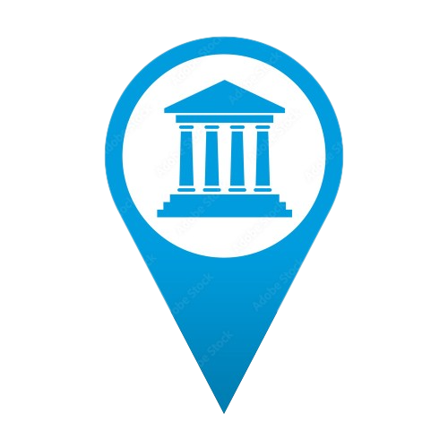

Aqui Museo
Olá!
Bem-vindo ao Aqui Museo, o seu portal de descobertas culturais! Prepare-se para embarcar em uma jornada fascinante através do mundo dos museus, onde o conhecimento, as curiosidades e as diversas culturas ganham vida.
No Aqui Museo, você encontrará um vasto acervo de museus virtuais prontos para serem explorados. Navegue por suas diversas galerias e exposições, e deixe-se envolver pela riqueza histórica e artística que cada um deles tem a oferecer. Com apenas alguns cliques, você poderá viajar no tempo, atravessar continentes e mergulhar em períodos marcantes da humanidade.
Nosso objetivo é proporcionar uma experiência imersiva e enriquecedora a todos os amantes da arte, história e cultura. Você encontrará museus renomados, como o Louvre, em Paris, o British Museum, em Londres, ou o Metropolitan Museum of Art, em Nova York, com suas incríveis coleções disponíveis para serem exploradas no conforto da sua casa.
Além dos museus mais conhecidos, o Aqui Museo também se dedica a destacar joias escondidas e museus menos conhecidos, mas igualmente fascinantes. Descubra tesouros escondidos em pequenas cidades, explore exposições temáticas exclusivas e amplie seus horizontes através das diferentes perspectivas culturais.
Nossos conteúdos vão além da simples visita virtual. Em cada museu, você encontrará informações detalhadas sobre as obras de arte, objetos históricos e artefatos exibidos, bem como curiosidades e fatos interessantes. Através de artigos e vídeos informativos, oferecemos a você uma visão mais aprofundada e um entendimento completo do que está diante dos seus olhos.
O Aqui Museo é um convite para que você se torne um explorador do conhecimento, um curioso incansável e um apreciador das riquezas culturais que o mundo tem a oferecer. Abra sua mente, desperte sua curiosidade e mergulhe em experiências que ampliarão sua compreensão do mundo.
Conheça novos museus, descubra obras-primas escondidas, aprenda sobre diferentes civilizações e mergulhe em culturas milenares. No Aqui Museo, a viagem nunca termina, e sempre haverá algo novo para aprender, admirar e se maravilhar.
Então, não espere mais! Junte-se a nós no Aqui Museo e comece sua jornada cultural agora mesmo. Prepare-se para se surpreender, expandir seus horizontes e se apaixonar pela riqueza do patrimônio humano. Bem-vindo a um mundo de conhecimento, curiosidades e novas culturas.